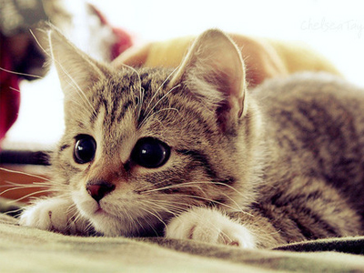

Le chat domestique (Felis silvestris catus) est la sous-espèce issue de la domestication du chat sauvage, mammifère carnivore de la famille des félidés.
Il est l’un des principaux animaux de compagnie et compte aujourd’hui une cinquantaine de races différentes reconnues par les instances de certification. Dans de très nombreux pays, le chat entre dans le cadre de la législation sur les carnivores domestiques à l’instar du chien et du furet. Essentiellement territorial, le chat est un prédateur de petites proies comme les rongeurs ou les oiseaux.
Les chats ont diverses vocalisations dont les ronronnements, les miaulements, les feulements ou les grognements, bien qu’ils communiquent principalement par des positions faciales et corporelles et des phéromones.
Selon les résultats de travaux menés en 2006 et 2007, le chat domestique est une sous-espèce du chat sauvage (Felis silvestris) issue d’ancêtres appartenant à la sous-espèce du chat sauvage d’Afrique (Felis silvestris lybica).
Les premières domestications auraient eu lieu il y a 8 000 à 10 000 ans au Néolithique dans le Croissant fertile, époque correspondant au début de la culture de céréales et à l’engrangement de réserves susceptibles d’être attaquées par des rongeurs, le chat devenant alors pour l’Homme un auxiliaire utile se prêtant à la domestication.
Tout d’abord vénéré par les Égyptiens, il fut diabolisé en Europe au Moyen Âge et ne retrouva ses lettres de noblesse qu’au XVIIIe siècle. En Asie, le chat reste synonyme de chance, de richesse ou de longévité. Ce félin a laissé son empreinte dans la culture populaire et artistique, tant au travers d’expressions populaires que de représentations diverses au sein de la littérature, de la peinture ou encore de la musique.